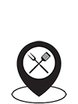
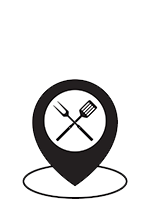
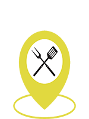
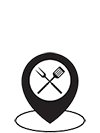
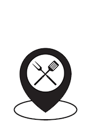
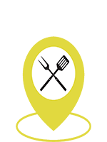
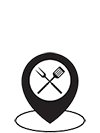
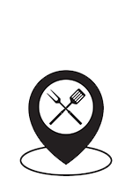
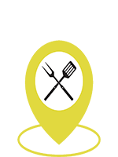

Recherche par filtres
Filtre moyenne d'étoiles
Ville :
Votre position :
Restaurant Google Places :

Restaurant Google Places Focus :

Restaurant Club Montili Avis :
Restaurant Club Montili Avis Focus :

Liste restaurant

 Votre position :
Votre position : Restaurant Google Places :
Restaurant Google Places Focus :
Restaurant Club Montili Avis :
Restaurant Club Montili Avis Focus :
Restaurant Google Places :
Restaurant Google Places Focus :
Restaurant Club Montili Avis :
Restaurant Club Montili Avis Focus :